Plan wycieczki
Dzień pierwszy
- Koloseum
- Palatyn
- Forum Romanum
- Fora Cesarskie
- pomnik Wiktora Emmanuela II
- Kapitol
- bazylika św. Marka
- kościół Il Gesu
- Largo di Torre Argentina
- Santa Maria Sopra Minerva
- Panteon
- Madama Palace
- Piazza Navona
- Chiesa Nuova
- Teatr Marcellusa
- wyspa Tyberyjska
- Forum Boarium
- bazylika Santa Maria in Cosmedin
- Circus Maximus
- Giardino degli Aranci
- bazylika św. Bonifacego i Aleksego
- Santa Sabina
- Knights of Malta Keyhole
- bazylika św. Cecylii na Zatybrzu
- piazza di Santa Maria in Trastevere
- ponte Sisto
- Janikulum
Dzień drugi
- bazylika św. Piotra
- zamek św. Anioła
- most św. Anioła
- Ara Pacis
- bazylika św. Ambrożego i Karola
- Santa Maria in Montesanto
- piazza di Spagna
- kościół Najświętszej Trójcy
- kościół NMP od cudów
- kościół artystów
- piazza del Popolo
- Terrazza del Pincio
- Orologio ad acqua
- piazza Barberini
- fontanna Mojżesza
- kościół NMP od Aniołów
- termy Dioklecjana
- piazza della Repubblica
- bazylika Matki Boskiej Większej
- obelisk Laterański
- bazylika św. Jana na Lateranie
- fontanna do Trevi
- piazza Colonna
Czas wycieczki: 2 dni
Skład osobowy: 2 dorosłych
Kilometry pokonane pieszo: 56
Przybliżony koszt na osobę: 700 PLN, zawiera wszystkie koszty, jakie ponieśliśmy
Kupiliśmy loty na lotnisko Ciampino - można stąd łatwo i tanio dotrzeć do centrum Rzymu (1,5 euro).
Łączony bilet do Koloseum, Forum Romanum i Palatynu możecie kupić tutaj: https://parcocolosseo.it/ (dobrze
jest zrobić to wcześniej, żeby uniknąć kolejek pod Koloseum).
Strona, na której możecie sprawdzić i zaplanować jazdę komunikacją miejską: https://viaggiacon.atac.roma.it/
Komunikacja miejska posiada też dwie aplikacje na urządzenia mobilne i po sprawdzeniu polecam zainstalować
sobie apkę: https://www.ticketappy.com
W Rzymie można też kupić kartę, która łączy w sobie tańsze zwiedzanie i komunikację miejską - ale warto
dobrze sobie to przeliczyć, w naszym przypadku nie opłacało się z niej skorzystać:
https://www.atac.roma.it/en/tickets-and-passes/card
Wizytę w Panteonie w weekendy i święta trzeba zarezerwować, można to zrobić skanując kod QR przed wejściem
lub na tej stronie: https://pantheon.cultura.gov.it/it
Plan wycieczki
Trasa
Zwiedzanie
CHIESA NUOVA, PIAZZA NAVONA, MADAMA PALACE I PANTEON
Kolejność zwiedzania pierwszego dnia trochę się zmieniła, ponieważ bilet do Koloseum udało nam się zarezerwować na 11:20, więc żeby nie tracić czasu, zaczęliśmy od Chiesa Nuova, czyli kościoła, który według legendy zbudowany został w miejscu wejścia do piekła. W starożytności stał tutaj pomnik Prozerpiny, który w VI w. został zastąpiony kościołem. Następnie przeszliśmy na piazza Navona - długi plac zbudowany w miejscu stadionu Domicjana. Można tam podziwiać kościół św. Agnieszki a także 3 fontanny. Największa z nich to fontanna 4 rzek: Dunaju, Gangesu, Nilu i Rio de la Plata, nad którymi góruje kopia egipskiego obelisku. Zmierzając w stronę Panteonu zatrzymaliśmy się jeszcze na moment przy pałacu Madama, barokowym budynku w którym mieszkała Małgorzata Parmeńska, ale musieliśmy zdążyć na czas do Koloseum, więc ruszyliśmy dalej. Przed Panteonem przywitał nas kolejny egipski obelisk i kolejka do wejścia. Byliśmy tam w sobotę i żeby wejść do środka trzeba było mieć zrobioną rezerwację (link znajdziecie na górze) oraz covidowy green pass. W środku można zobaczyć, między innymi, grób Rafaela. Niestety sporą część zdobień można sobie jedynie wyobrażać, ponieważ brąz, którym był ozdobiony panteon, został z niego zabrany w celu udekorowania bazyliki św. Piotra.
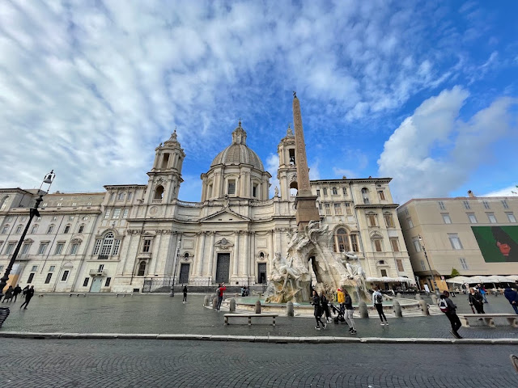
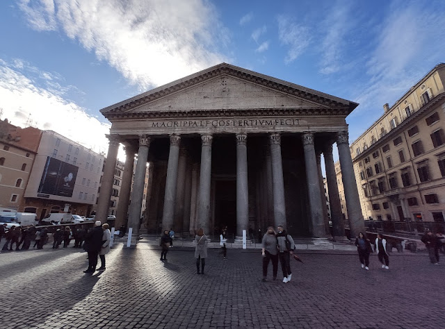
Zwiedzanie
LAGO DI ARGENTINA, IL GESU, SANTA MARIA SOPRA MINERVA I BAZYLIKA ŚW. MARKA
wśród których znajduje się schronisko dla kotów. Kolejną ciekawostką jest fakt, że to właśnie tutaj został zasztyletowany Juliusz Cezar. Dosłownie kilka kroków dalej trafiamy do kościoła Il Gesu. Inicjatorem jego budowy był św. Ignacy Loyola i to jego grobowiec oraz posąg możemy zobaczyć w świątyni. Nie jest to pierwsza wersja tej rzeźby - oryginał został przetopiony na kruszec, aby papież Pius VI mógł zapłacić daninę dla Napoleona. W dwóch kolejnych kościołach nie mieliśmy szczęścia i pocałowaliśmy przysłowiową klamkę. W Santa Maria Sopra Minerva, świątyni wzniesionej w miejscu dawnego kultu bogini Minerwy, nie udało się nam zobaczyć kilku ciekawostek, takich jak pierwszy papież w grobowcu przedstawiony w pozycji siedzącej czy rzeźba Jezusa dłuta Michała Anioła. A w bazylice św. Marka, słynącej z pięknych mozaik i sklepienia, udało nam się zobaczyć tylko okoliczny ogród.
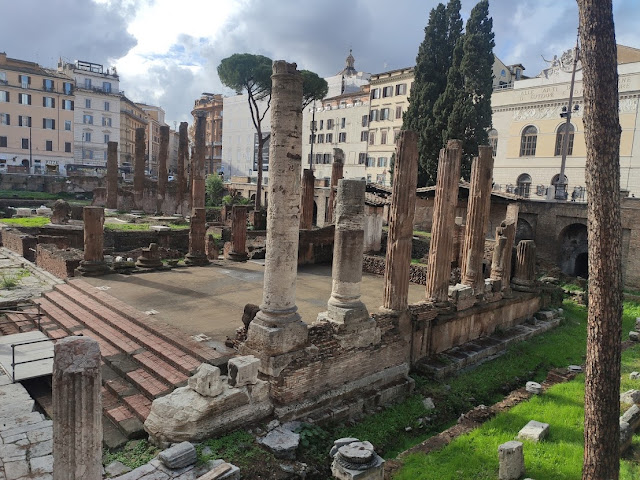
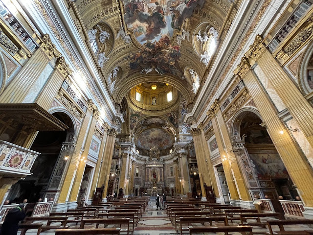
Zwiedzanie
KOLOSEUM, PALATYN, FORUM ROMANUM I FORA CESARSKIE
Do wspomnianych zabytków kupuje się jeden wspólny bilet. Na górze znajdziesz linki do strony. Idąc do Koloseum od strony pomnika Wiktora Emmanuela II można podziwiać zarówno fora cesarskie jak i Forum Romanum. Ale najpierw najbardziej charakterystyczny zabytek Rzymu. Czteropiętrowy amfiteatr zrobił na nas niesamowite wrażenie. Gdyby nie napięty plan zwiedzania, z pewnością zostalibyśmy tam dłużej. Wyszliśmy z powrotem na zewnątrz w okolicy łuku Konstantyna i ruszyliśmy zdobywać Palatyn. To właśnie tutaj, według legend, Romulus założył pierwszą rzymską osadę. Można tutaj "poczuć historię". Spacerując pomiędzy ruinami rezydencji i w akompaniamencie papug, zatrzymywaliśmy się w punktach widokowych i podziwialiśmy rozciągające się przed nami panoramy. Schodząc ze wzgórza, weszliśmy prosto do Forum Romanum. To idealna kontynuacja historycznego spaceru. Kluczyliśmy po tym rozległym kompleksie architektonicznym na każdym kroku odkrywając coś ciekawego. Fora Cesarskie z powodu pandemii, niestety nie były otwarte dla turystów - ale to nic straconego. Z poziomu Via dei Fori Imperiali można obejrzeć je bardzo dokładnie.
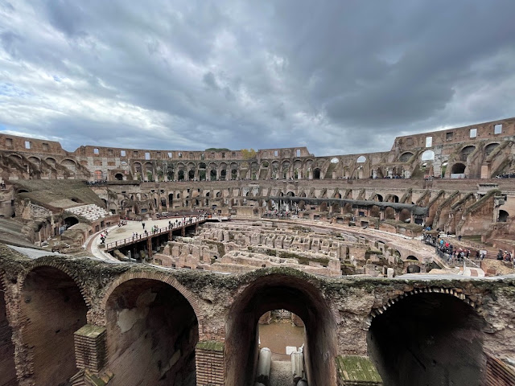
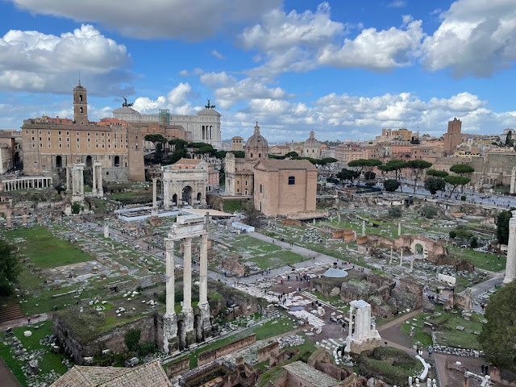
Zwiedzanie
POMNIK WIKTORA EMMANUELA II, KAPITOL I TEATR MARCELLUSA
Pomnik Wiktora Emmanuela II zdecydowanie góruje nad Rzymem i może być niezłym punktem orientacyjnym, ale moim zdaniem jest mocno przesadzony. Został wzniesiony na pamiątkę zjednoczenia Włoch a z tarasu widokowego, jaki się na nim znajduje, można podziwiać panoramę Rzymu. Zaraz obok znajduje się Kapitol, czyli najświętsze z siedmiu wzgórz. W jego centrum znajduje się plac zaprojektowany przez Michała Anioła a nieopodal można zobaczyć kopię rzeźby Wilczycy Kapitolińskiej (oryginał znajdziecie w Muzeum Pałacu Konserwatorów). Wydaje mi się jednak, że Kapitol przyćmiewa swoim rozmiarem stojący obok opisywany wcześniej pomnik. Po zejściu schodami ze wzgórza poszliśmy do Teatru Marcellusa, czyli pierwowzoru Koloseum. Podobno jego pomysłodawcą był Juliusz Cezar, choć budynek powstał już po jego śmierci. Obok można zobaczyć odkrytą na początku XX wieku świątynię Apollina, skąd co roku, w intencji znalezienia małżonka, wyrusza na Awentyn procesja starych panien.
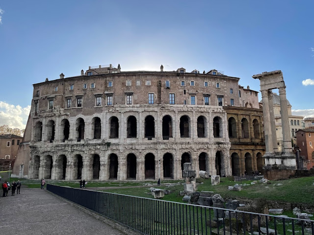
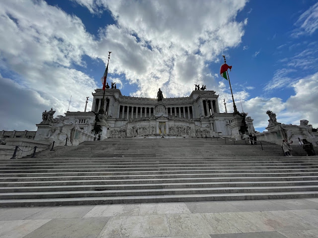
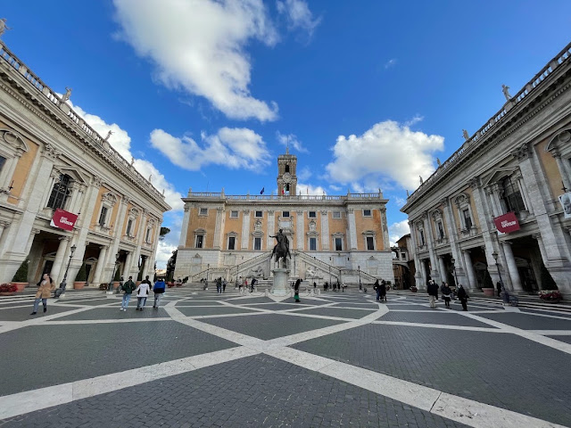
Zwiedzanie
WYSPA TYBERYJSKA, FORUM BOARIUM I BAZYLIKA SANTA MARIA IN COSMEDIN
W drodze na wyspę Tyberyjską minęliśmy jeszcze synagogę, w której można znaleźć siedzibę Muzeum Hebrajskiego. Sama wyspa powstała podobno poprzez piasek naniesiony na przewrócony statek. Żeby podkreślić bardziej podkreślić jej kształt w I w. p.n.e. dzięki pracom wzmacniającym wymodelowano jej boki na kształt burt. Obrazu statku dopełniał postawiony na jej środku obelisk, który niestety nie dotrwał do dzisiejszych dni. Sama wyspa miała znaczenie strategiczne, ponieważ znacznie ułatwiała przeprawę pomiędzy dwoma brzegami Tybru. Idąc dalej wzdłuż brzegu i po pokonaniu kolejnego mostu dotarliśmy do Forum Borarium. W dawnych czasach znajdował się tu targ na którym handlowano bydłem. Dzisiaj na placu dominują dwie świątynie: pierwsza poświęcona jest Herkulesowi (przez wiele lat była mylnie uznawana za świątynię Westy) i druga należąca do Portonusa - opiekuna portów. Można też tutaj zobaczyć Łuk Janusa oraz bazylikę Santa Maria in Cosmedin wraz ze słynnymi Ustami Prawdy. Jeśli zdecydujecie się włożyć rękę do kamiennego kręgu, na którym widnieje twarz morskiego bóstwa, a nie macie na swoim sumieniu kłamstw - możecie to zrobić bez obaw. Chyba, że obawiacie się faktu, że ów krąg służył kiedyś jako ujście kanału ściekowego. W samej bazylice warto zwrócić uwagę na posadzkę, której fragmenty wykonane są ze złota oraz na czaszkę św. Walentego.
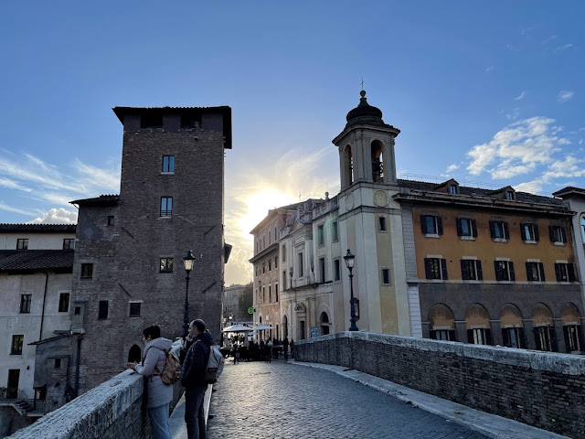
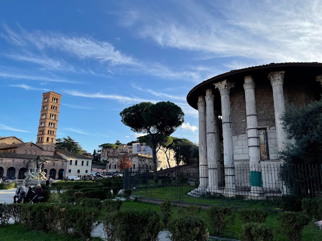
Zwiedzanie
OGRÓD POMARAŃCZY, BAZYLIKA ŚW. SABINY, KOŚCIÓŁ ŚW. ALEKSEGO I DZIURKA OD KLUCZA
W drodze do ogrodu pomarańczy podeszliśmy jeszcze, żeby zobaczyć Circus Maximus i ogród różany. W pierwszym i drugim przypadku musieliśmy użyć wyobraźni, bo z powstałego VI w. i czynnego przez 12 wieków Hipodromu nie zostało wiele. Z kolei ogród był po prostu zamknięty. W ogrodzie pomarańczy, gdzie podobno można zobaczyć pierwsze drzewko przywiezione tutaj z Hiszpanii w XIII w, duże wrażenie robi również panorama Rzymu, którą można zobaczyć z tarasu widokowego. Podobno największy urok ogród ma w szare popołudnia, kiedy dojrzałe owoce kontrastują z pochmurnym niebem. Następnie odwiedziliśmy dwa kolejne kościoły: bazylikę św. Sabiny, gdzie można zobaczyć malowidła z V i X w oraz kościół św. Aleksego, w którym można zobaczyć ikonę Madonny z 200 roku oraz schody, pod którymi święty spędził ostatni okres swojego życia. Ostatnim punktem na Awentynie była dziurka od klucza w drzwiach zakonu rycerzy Malty. Ustawiliśmy się w sporej kolejce i cierpliwie czekaliśmy na swoją kolej. Przez tą dziurkę zobaczyć można unikalny widok: kopułę bazyliki św. Piotra otoczoną przez żywopłot. Zresztą sami zobaczcie to na zdjęciu poniżej.
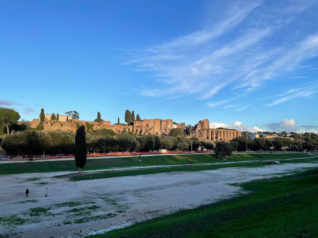
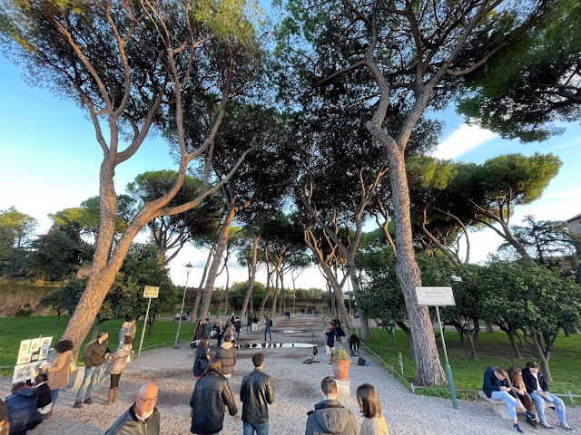
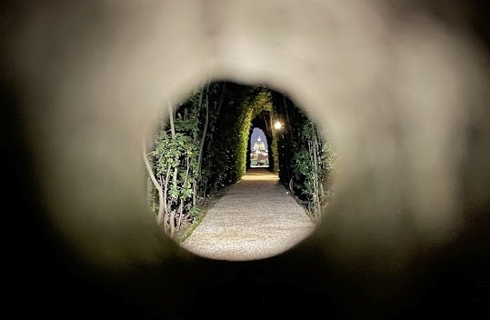
Zwiedzanie
BAZYLIKA ŚW. CECYLII, PIAZZA SANTA MARIA IN TRASTEVERE, PONTE SISTO I JANIKULUM
Na Zatybrze dotarliśmy już po zmierzchu, dzięki czemu przechodząc uliczkami zapełnionymi stolikami i światłami mogliśmy poczuć klimat nocnego życia. Pierwszy punkt tutaj to bazylika św. Cecylii - patronki muzyki kościelnej. Świątynia została wybudowana w miejscu, znaleziono grób wspomnianej świętej. Mieliśmy szczęście i trafiliśmy tutaj na występ chóru. Następnie dotarliśmy na piazza Santa Maria in Trastevere. Nad placem góruje świątynia, w której można zobaczyć złocone mozaiki oraz narzędzia, które podobno były używane w celu torturowania pierwszych chrześcijan (obeszliśmy kościół trzy razy, zanim je zauważyliśmy ;)). W centrum placu znajduje się fontanna uważana za najstarszą w całym Rzymie. Idąc dalej dochodzimy do Ponte Sisto czyli mostu Sykstusa. Powstał w XV wieku na życzenie papieża Sykstusa i do dzisiaj jest jednym z głównych szlaków prowadzących na Zatybrze. Muszę przyznać, że po tak aktywnym dniu nie do końca dobrze przemyśleliśmy sobie ostatnie miejsce, które chcieliśmy zobaczyć - wzgórze Janikulum. Ale czego się nie robi dla najsłynniejszego tarasu widokowego w Rzymie? Kiedy w końcu usiedliśmy na murku, z którego rozciągał się widok na nocne miasto, stwierdziliśmy jednogłośnie, że było warto. I że w końcu możemy wybrać się na wyczekaną pizzę :)
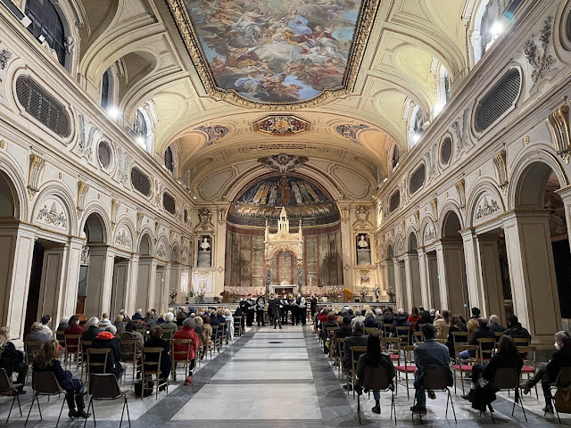
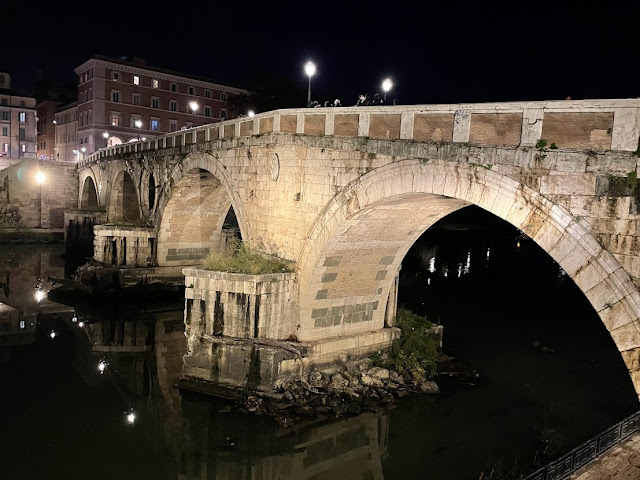
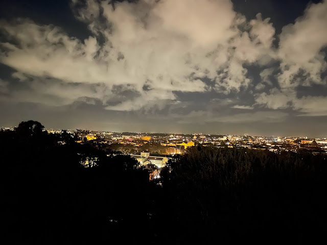
Zwiedzanie
BAZYLIKA ŚW. PIOTRA, ZAMEK I MOST ŚW. ANIOŁA
Przed zwiedzaniem bazyliki planowaliśmy odwiedzić Muzea Watykańskie, ale dopiero w sobotę wieczorem sprawdziliśmy, że godziny otwarcia się zmieniły i w każdą niedzielę muzea są zamknięte. W związku z tym z samego rana poszliśmy prosto do świątyni, dzięki czemu uniknęliśmy tłumów. Od samego wejścia uderza ogrom tego miejsca - może ono pomieścić 54 tysiące wiernych. W środku znajduje się taka ilość rzeźb, dekoracji i malunków, że tak naprawdę nie wiadomo w którą stronę najpierw spojrzeć. Całość ocieka wielkością i przepychem. Warto wyjść na kopułę, z której można zobaczyć zarówno wnętrze bazyliki jak i panoramę Rzymu. Po zejściu na dół poszliśmy w kierunku zamku św. Anioła. Budynek ten pełnił różne funkcje: początkowo było tu mauzoleum cesarza Hadriana, schronieniem dla papieży a także więzieniem. Naprzeciwko głównego wejścia znajduje się most wybudowany z marmuru w II w. Jedną z historycznych ciekawostek jest fakt, że właśnie na tym moście w XIX wieku napadnięto na orszak pogrzebowy Piusa IX z zamiarem wyrzucenia jego ciała do Tybru. Most ozdabiają figury 10 aniołów, Piotra i Pawła a także Adama, Noego, Abrahama i Mojżesza.
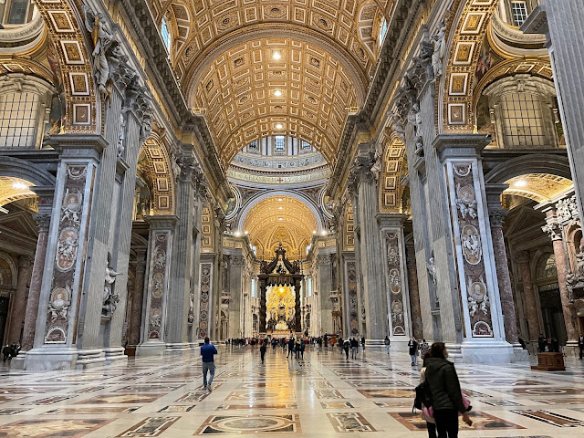
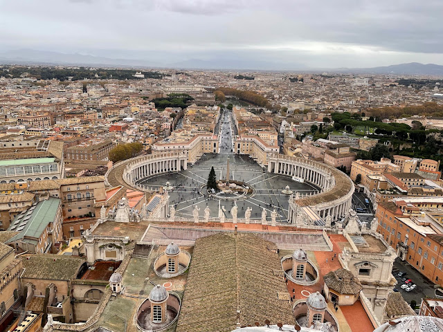
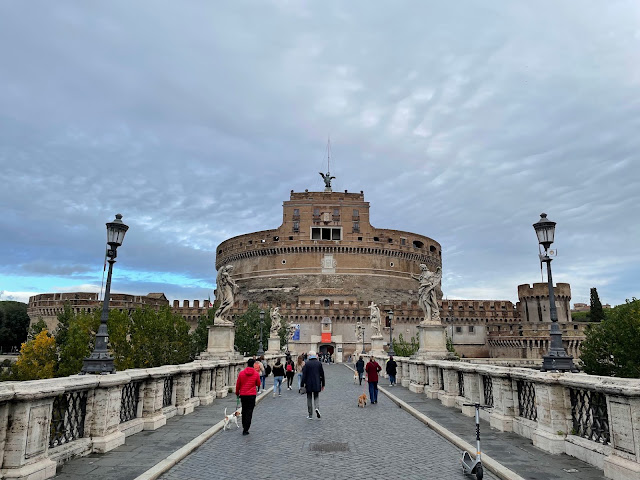
Zwiedzanie
ARA PACIS, BAZYLIKA ŚW. AMBROŻEGO I KAROLA, PIAZZA DI SPAGNA I KOŚCIÓŁ NAJŚWIĘTSZEJ TRÓJCY
Po drugiej stronie Tybru znajduje się Ara Pacis czyli mauzoleum Augusta. Pochodzi z I w. p.n.e. i po przeniesieniu go z Via Flamina został odbudowany prawie całkowicie z oryginalnych części. Kolejny z zaplanowanych punktów to bazylika św. Ambrożego i Karola. Niestety świątynia była zamknięta, a szkoda, bo przewodniki polecają zajrzeć do środka, ponieważ w latach 1987-2004 przeprowadzona została gruntowna renowacja i wszystkie zdobienia w środku otrzymały nowe, świeże kolory. Idąc dalej doszliśmy do piazza di Spagna, na której znajduje się piękna fontanna w kształcie łodzi oraz oczywiście słynne Hiszpańskie Schody. Po pokonaniu 137 schodów można zajrzeć do kościoła Najświętszej Trójcy z 1527 roku.
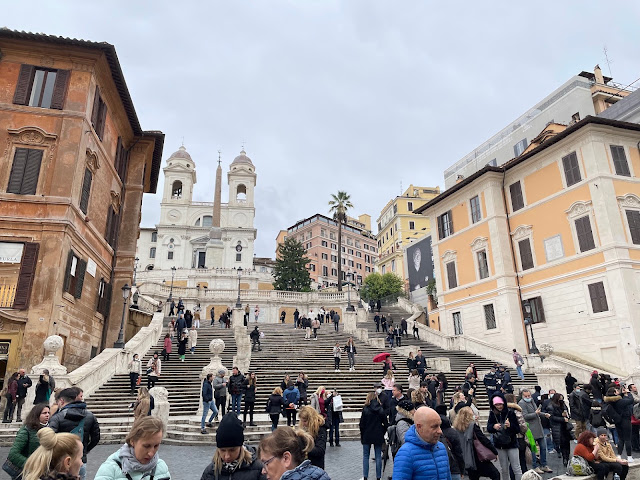
Zwiedzanie
PIAZZA DI POPOLO I 3 KOŚCIOŁY
Po dotarciu na piazza di Popolo uwagę przyciągają dwa bliźniacze kościoły: Artystów i NMP od Cudów. W pierwszym często odbywają się pogrzeby gwiazd a także przedstawienia i koncerty. Drugi miał być identyczny, ale na drodze ku realizacji tego planu stanął brak miejsca, w związku z czym projekt musiał zostać zmniejszony. Po drugiej stronie placu znajduje się kościół Santa Maria del Popolo, który był zamknięty. W środku można zobaczyć dzieła Rafaela i Caravaggio. Z samym placem, który jest częstym miejscem wieców politycznych czy parad włoskich piłkarzy po zwycięskich mistrzostawach, krył w swojej okolicy grób Nerona. Z powodu złych mocy nawiedzających mieszkańców został zburzony a papież Paschalis II nakazał w tym miejscu budowę kaplicy. Jak głosi legenda, w momencie rozpoczęcia prac złe duchy opuściły to miejsce i mieszkańcy mogli spać spokojnie. Na środku placu znajduje się egipski obelisk z XIII w. p.n.e., który został wzniesiony za panowania Ramzesa II.
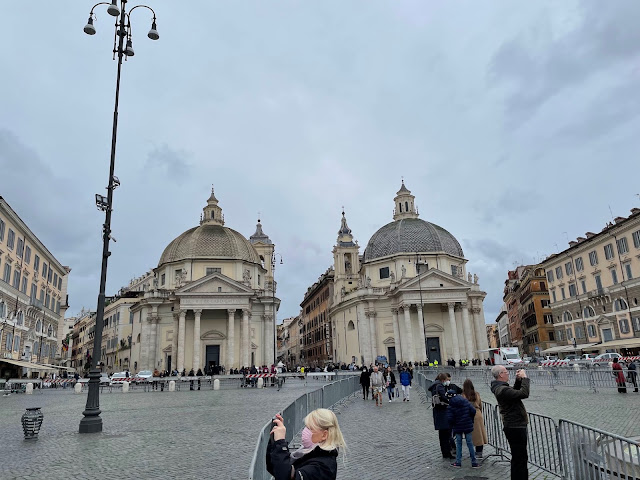
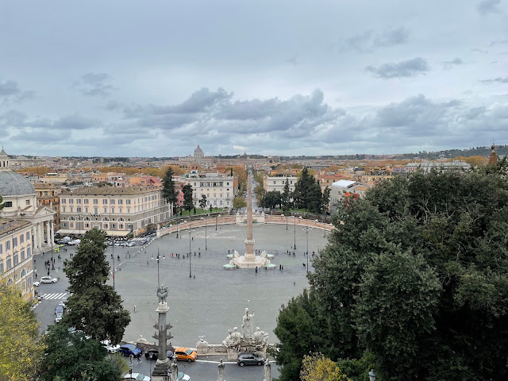
Zwiedzanie
TERRAZZA DEL PINCIO, OROLOGIO AD AQUA I PIAZZA BARBERINI
Nad placem góruje taras widokowy na wzgórzu Pincio. Na polecenie Napoleona w tym miejscu został utworzony pierwszy rzymski publiczny ogród. W upalne dni musi być wspaniale odpocząć tutaj w cieniu drzew. Cały park zajmuje 85 ha i gdyby pogoda nam na to pozwoliła, spędzilibyśmy tam zdecydowanie więcej czasu. Obejrzeliśmy tam pałacyk Valadiera,w którym aktualnie działa ekskluzywna restauracja, następnie zobaczylismy obelisk zbudowany na część kochanka cesarza Hadriana - Antinousa, który utonął w Nilu. Na końcu zatrzymaliśmy się przy zegarze wodnym, którego dekoracja przywodzi na myśl zapomniane leśne zakątki. Cały mechanizm wprowadzany jest w ruch za pomocą wody, która przelewa się pomiędzy dwoma pojemnikami.
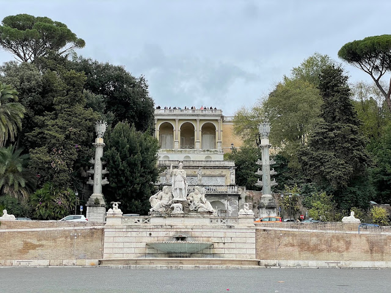
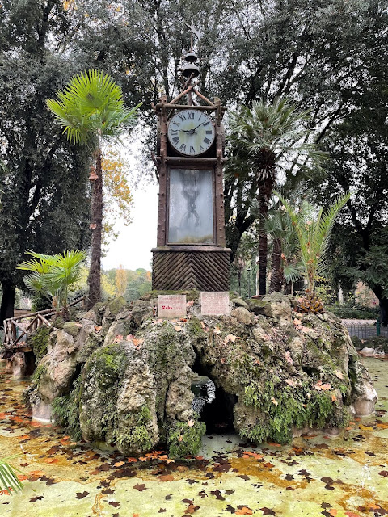
Zwiedzanie
FONTANNA MOJŻESZA, KOŚCIÓŁ NMP OD ANIOŁÓW, TERMY DIOKLECJANA I PIAZZA DELLA REPUBBLICA
Nadszedł czas na kolejne rzymskie wzgórze - Kwirynał. Najpierw zatrzymujemy się obok fontanny Mojżesza, która nie spodobała się rzymianom i przez długi czas była obiektem drwin. Naszym zdaniem, Mojżesz tutaj ma w sobie jakiegoś nordyckiego ducha ;). Idąc dalej docieramy do term Dioklecjana, czyli kompleksu publicznych łaźni, który był uznawany za największy w antycznym Rzymie. Były czynne aż do 573 r, kiedy Goci odcięli akwedukty które doprowadzały do nich wodę. W antyczne termy doskonale wkomponowany jest kościól NMP od Aniołów - ostatni rzymski projekt Michała Anioła. Wnętrze wypełnione jest pięknymi malowidłami, w tym zodiakalnych konstelacji i zmieniającego się położenia Gwiazdy Polarnej. Ostatnim punktem tutaj jest piazza della Repubblica, na środku którego znajduje się fontanna Najad. Wyzywające pozy nimf wzbudziły sporo kontrowersji w czasie jej otwarcia. Dodatkowego uroku dodają dwa gmachy z podcieniami, wybudowane na dwóch bocznych skrzydłach placu.
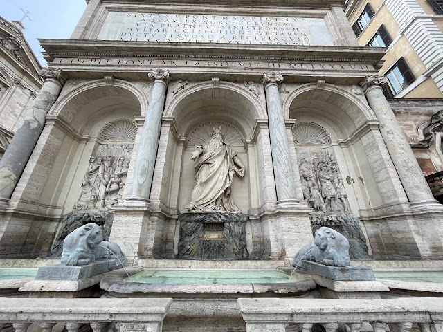
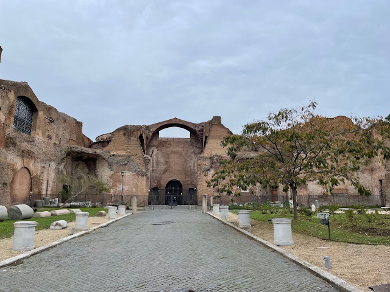
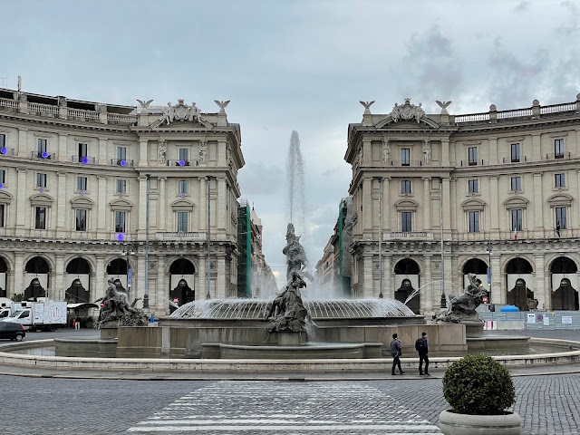
Zwiedzanie
BAZYLIKA MATKI BOSKIEJ WIĘKSZEJ, OBELISK LATERAŃSKI I BAZYLIKA ŚW. JANA NA LATERANIE
Po trochę dłuższym spacerze docieramy do bazyliki Matki Boskiej Większej, czyli największej rzymskiej świątyni związanej z kultem maryjnym. Jest naprawdę duża i jeśli spojrzycie w górę, zobaczycie rzeźbiony, pozłacany strop wykonany z kasetonów. Dodatkowo w świątyni można znaleźć kaplicę Sykstyńską - nie tą najsłynniejszą, ale również wartą uwagi. Kontynuując dłuższy spacer dochodzimy do obelisku Laterańskiego - największego stojącego egipskiego obelisku na świecie a następnie do bazyliki św. Jana na Lateranie. Wygląda ona trochę jak mini wersja bazyliki św. Piotra z Watykanu a w środku znajduje się między innymi fragment stołu, przy którym podobno została spożyta ostatnia wieczerza. Nieopodal, po drugiej stronie ulicy można obejrzeć Święte Schody, czyli te, które wiodły do pałacu Poncjusza Piłata.
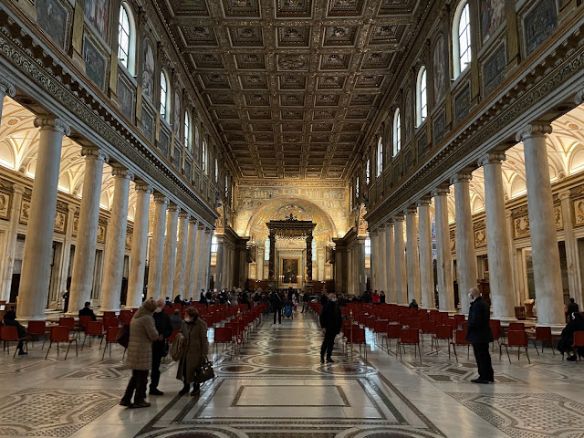
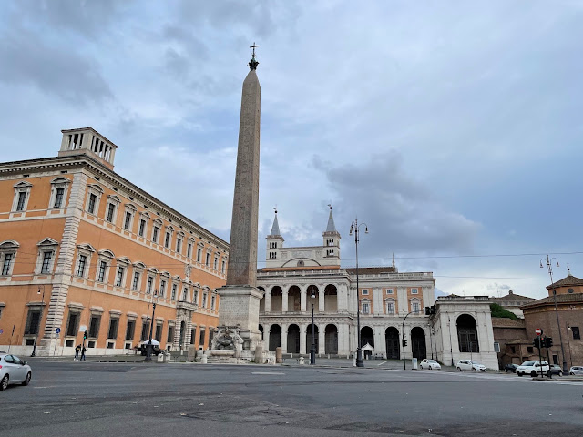
Zwiedzanie
FONTANNA DI TREVI I PIAZZA COLONNA
Do fontanny di Trevi wróciliśmy metrem i już z daleka było wiadomo, że zbliżamy się do celu. Tłum ludzi oblegających fontannę był naprawdę spory, pomimo nie najlepszej pogody. Fontanna ma 20m szerokości i 26m wysokości. W centrum widać pomnik neptuna, który powozi rydwanem zaprzęgniętym w trytony. Towarzyszą mu posągi, które przedstawiają Zdrowie oraz Obfitość. I w końcu ostatni punkt, jaki udało nam się zobaczyć podczas naszego dwudniowego zwiedzania Rzymu: piazza Colonna. W centrum placu stoi kolumna Marka Aureliusza, ale na jej szczycie nie ma już jego posągu. Na polecenie papieża Sykstusa V został zamieniony na figurę św. Pawła. To były intensywne dwa dni, ponieważ postanowiliśmy wykorzystać na maxa fakt, że udało nam się tym razem wyjechać bez dzieciaków.
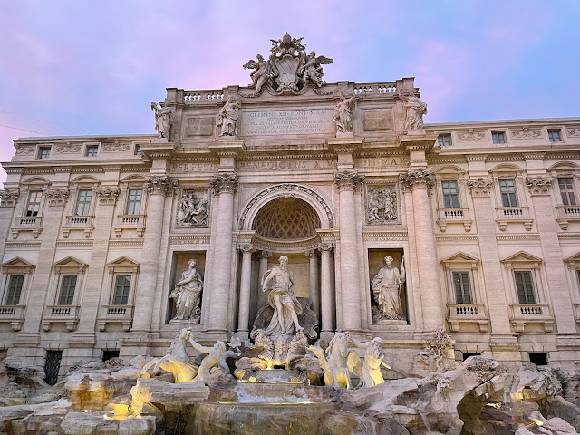